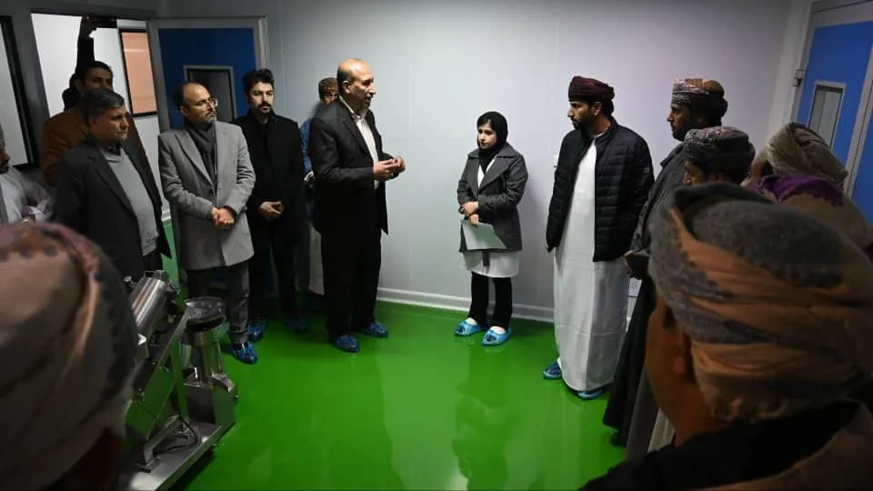
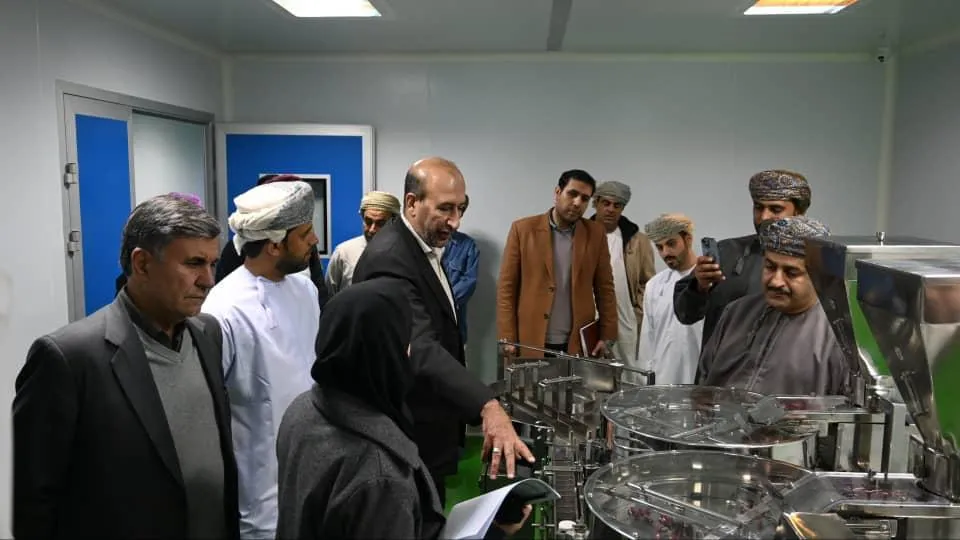
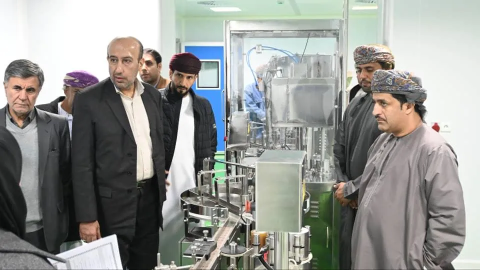

<div class="container-fluid rounded-5 animate__animated animate__fadeIn animate__delay-1s  ">
    <div class="row d-flex justify-content-center align-items-center" style="margin-top: 40px;">
        <div class="col-12 col-md-6 d-flex justify-content-center align-items-center flex-column rounded-5 w-75">

            <div class="swiper myslider mt-4 rounded-4" style="max-width: 950px;">
                <div class="swiper-wrapper">
                    <div class="swiper-slide">
                        
                    </div>
                    <div class="swiper-slide">
                        
                    </div>
                    <div class="swiper-slide">
                        
                    </div>
                    <div class="swiper-slide">
                        
                    </div>
                    <div class="swiper-slide">
                        
                    </div>
                    <div class="swiper-slide">
                        
                    </div>
                    <div class="swiper-slide">
                        
                    </div>


                </div>
            </div>
            <div
                style="margin-top:40px; font-weight: bold; font-size: 18px; color: #0c5460;width: 100%;text-align: right;">
                تعداد بازدید: <span id="viewCount">0</span>
            </div>
            <p class="new-line" style="color: #0c5460; margin-top: 30px; font-size: 20px; text-align: justify;">
                محمد بن ناصر مسکری، رئیس اتاق بازرگانی استان شمال شرقی عمان، همراه با هیئتی از سرمایه‌گذاران از
                شرکت داروگستر ساوا شفاژن بازدید کرد. این هیئت از خطوط تولید مکمل‌های تقویتی کبد، قلب، مغز و
                مکمل‌های پیشگیرانه از سرطان دیدن کردند.

                این محصولات برای نخستین بار در خاورمیانه طراحی و تولید شده‌اند. تجهیزات مدرن و فناوری‌های
                پیشرفته مورد استفاده در شرکت، توجه هیئت عمانی را جلب کرد. آن‌ها از سطح علمی و توان فنی شرکت
                تمجید کردند.

                در ادامه، رئیس هیئت عمانی پیشنهاد راه‌اندازی خطوط تولید مشابه در عمان را مطرح کرد. هدف این طرح،
                صادرات به کشورهای حوزه خلیج فارس و اروپا است. او تأکید کرد که کشورهای عربی به سلامت مردم اهمیت
                ویژه‌ای می‌دهند.

                به گفته ایشان، نبود دانش فنی یکی از موانع راه‌اندازی چنین واحدهایی در منطقه است. برای جبران این
                کمبود، هیئت عمانی از تیم فنی و مدیریتی داروگستر ساوا دعوت کرد. آن‌ها خواهان سفر کارشناسان ایرانی
                به عمان برای بررسی شرایط سرمایه‌گذاری مشترک شدند.


            </p>
        </div>
    </div>
</div>